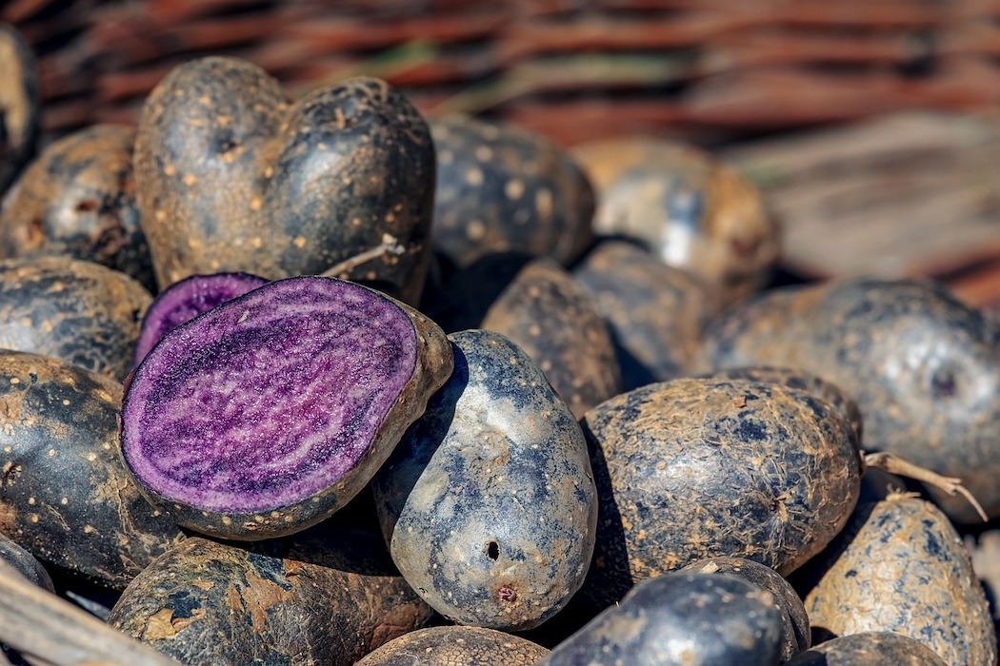
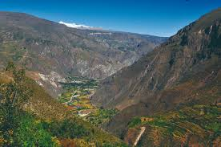
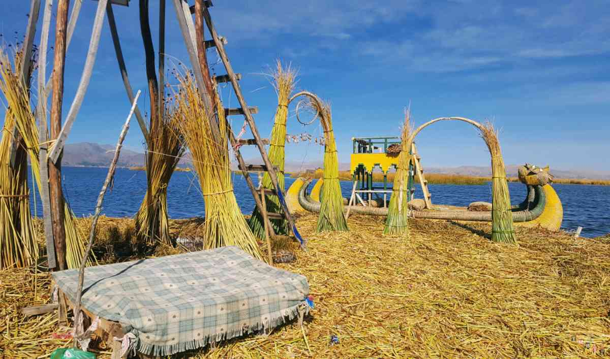
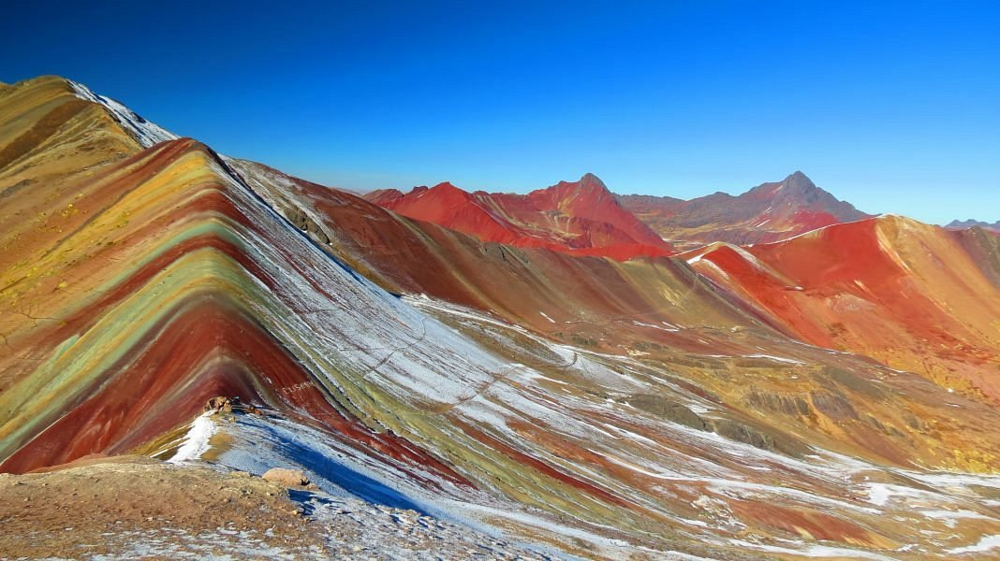

Pillole di curiosità
Il Perù è la patria delle patate
Il Perù possiede oltre 3.000 varietà di patate, più di qualsiasi altro Paese al mondo.
Gli Inca le coltivavano già migliaia di anni fa e le consideravano un alimento sacro.
Esistono patate blu, rosse, nere, dolci, amarognole e persino patate che crescono solo sopra i 4.000 metri.

Il Perù ha il canyon più profondo del mondo
Il Canyon del Colca e il Canyon del Cotahuasi (in foto) superano entrambi il Grand Canyon americano.
Il Cotahuasi raggiunge una profondità di oltre 3.500 metri, un vero abisso naturale.

Il lago Titicaca ha isole costruite a mano
Le popolazioni Uros vivono su isole galleggianti fatte interamente di totora, una pianta acquatica.
Le isole vengono costruite strato dopo strato e devono essere “ricostruite” continuamente.

Il Perù ha una montagna arcobaleno naturale
La Montaña de Siete Colores (in foto) è famosa per le sue strisce naturali di colori diversi, create da minerali stratificati nel tempo.
È uno dei luoghi più fotografati del Paese.
